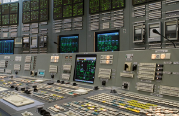
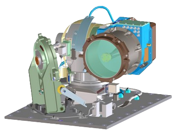

Requirements
We were tasked to design a network from the ground up to protect critical infrastructure on the moon while at the sametime accounting for a reliable, redundant, and secure network to transport the data, video, telemetry, and voice from the moon's Smart Building to a Control Center(s) on Earth.
This includes:
- At least 3 Network Designs with simulation/network model that demonstrates the networks.
- A recommendation on the best network design and the rationale for each component.
- Give recommendations on why you chose each component.
When designing the network we kept 3 things in mind: security, future proofing, and redundancies. This means we try to avoid the possibility of a single point of failure, building a space network of the future, and at the same time maintaining good security practices. We put a lot of effort into researching what would be the best decision for every level of the network. On the moon we focused on how we should properly section off the network. Firstly, we modeled our network after a general industrial system. This means that we sectioned off control systems by air gapping it off from the rest of the network. We also recommend procedures that deal with control systems and find a balance between practical and necessary. Throughout cyber security history, big breaches usually occur when human operators become lazy. That's why we believe striking this balance is key to maintaining secure systems. For Moon to earth communication, we settled on the emerging optical communication system. Demonstration testing has shown this technology to be a big leap over the already existing RF system.
Network
We chose to section off the network to mitigate the risk of an intruder pivoting from one system to another. We based this off industrial control systems in that they are air gapped from the internet to prevent attempts of hijacks.
When it comes to users and what they are able to do, we recommend adopting a principle of least privilege, and if the scenario arises when the privilege of a user needs to be granted then follow preceders to grant such access. For example, the large majority of end devices such as PCs will be classified as least-privileged users, in which they have the most limited access and often the lowest level of authority.

Optical Communication System
We chose to use optical communication because of its improvements over RF solutions. In 2013 NASA took a huge leap forward with their LLCD. They showed that even an early optical communication system was a major improvement over the aging RF system in use.The Satellite was able to transmit 600MB/s from the moon to the earth. They were also able to send data uninterrupted for 17 hours. In 2021, they tested the revised LCRD system where the satellite would stay in Geosync orbit. In this test run they have gotten speeds up to 1.2 GB/s. The time table set for the development of the moon base, aging RF system, and the rapid development in this technology make it the obvious choice.

Designs

The 1st network design is made for the moon-based research hubs. The research PCs are connected to switches and routers for quick and easy PC-to-PC communications. The control systems are air-gapped from the rest of the network to prevent any attacks from reaching them. The switches and routers act as nodes to expand on so that new PCs can be easily added. The exploration PC and the NASA communication PC are also connected to let data be easily transmitted to the research groups' PCs.

The 2nd network is meant for the exploration groups on the moon. The cell tower is connected to a COS so that data can be sent and received from the PC to the radio communication devices of the explorers. They could be anything from smartphones or just walkie-talkies. The cell tower lets them communicate with each other and send any visual or audio data back to the research base. The cell tower has a max range of 4000 meters which is enough for each research base.

The 3rd design is made for connection to the satellite above the moon. The Cisco router series 2800 can be fitted with an IP VSAT satellite module to communicate with orbiting satellites. The server can be used to provide access to the internet for the base while still having a limited connection to the base.

Because there is no way to demonstrate satellites we used the 2811 routers to model satellites due to their satellite module. The relay system is just a simple connection between orbiting satellites and routers on the moon and Earth. Satellite nodes can be added for more security and to house lasers for optical laser communications.
About the infrastructure
NASA has been developing optical communications for both Near Earth and Deep Space applications. Our team has taken inspiration from the findings of the project, which has a few major advantages; for approximately the same mass, power, and volume, an optical communications system will provide significantly higher data rates or data volume than a comparable radio frequency system; for the same data rate (e.g. 1 Gbps of output), an optical communications system will require less mass, power, and volume than a comparable radio frequency system.
The biggest threat facing integral infrastructure in space is the threat of intrusion of said infrastructure. Preventing satellite hijacking involves implementing encryption and authentication protocols to secure communication between ground stations and satellites. Access controls limit interactions with authorized personnel, while advanced monitoring systems detect unauthorized activity for swift response. Ensuring the security of software and protocols used in satellite communication is crucial to prevent the exploitation of vulnerabilities. Physical security measures, including restricted access and surveillance, help deter unauthorized physical access to critical infrastructure. Designing satellite systems with redundancy and fail-safe mechanisms allows for rapid recovery and minimizes the impact of successful hijacking attempts.
One essential thing to remember is our solar system's unforgiving environment. Our sun alone interferes with our ability to communicate with our satellites effectively. This could mean life or death for astronauts who need to maintain constant contact with NASA. Optical communication overhauls this old paradigm by increasing the bandwidth and making it easier for NASA to deploy distributed ground terminals to avoid radiation, cloud coverage, and debris disturbances.
Another thing to consider is the power required for an RF communication system. Therefore, we recommend an optical-based communication system with a small RF system as a fallback. The power to manage an optical ground system is notably less than that of an RF ground station. On top of this, the size of a ground station is significantly smaller and more capable than today's RF stations.
The restriction that we faced during this project was power. On the moon, you are restricted in what you can take up with you. Right now, sending anything up there would cost upwards of 300k dollars per kg. To add insult to injury, a 72-cell solar panel weighs about 24 kg. So, one solar panel would cost upwards of 7.2 million dollars. A significant portion of power consumption will come from computers; therefore, we recommend a power-efficient architecture for computation on the moon. That's why we recommend arm-based computers for the moon. Its power efficiency over the x86 platform cannot be overstated; though its performance is not on par, this is not something to worry about. Apple has shown that the performance of arm-based chips is waiting to be unlocked, and in the coming years, there will be viable high-performance arm chips.
Conclusion
In conclusion, the presented network design fulfills the objective of creating a robust and secure communication infrastructure for lunar operations while ensuring reliable data transmission to Earth. By offering three distinct network designs accompanied by simulations and rationale, we have addressed the need for redundancy, security, and adaptability in the lunar network. The emphasis on security, demonstrated through air-gapped control systems and least privilege access, mitigates the risk of intrusions and ensures the integrity of critical infrastructure. Furthermore, the adoption of optical communication technology over traditional RF systems reflects a forward-looking approach, leveraging advancements in speed and reliability demonstrated by NASA's research. Overall, this comprehensive solution not only meets the immediate needs of lunar operations but also anticipates future challenges, providing a solid foundation for sustained lunar exploration and research endeavors.